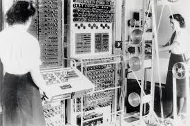
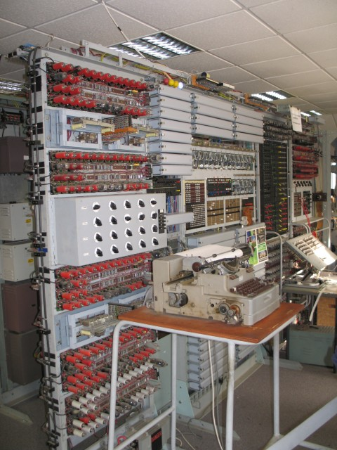

The Colossus Computer


Colossus was a giant computer, as it occupied the entire space of a living room.
This computer was 7 feet high, 17 feet wide, and 11 feet deep. That seems massive,
but Colossus was the first electric computer.
Built in 1944 by Tommy Flowers, Colossus's purpose was to counteract the Nazis during World War II.
Colossus decrypted Nazi messages, and much of the information that was released was
widely acknowledged for shortening the war by many months, and saving tens of thousands of lives.
Colossus was operated at Bletchley Park, in the United Kingdom.
The entire Colossus project was kept a secret many years after the war was over. Much of the
information about it was only declassified recently, around 2000. That means that it was classified
for over 50 years after its use!
There were different "generations" of the Colossus Computers. Colossus Mark 1 was built by Tommy Flowers,
and it took him eleven months to complete. Just think, eleven months to build one machine. That's insane!
Tommy was assisted by Sidney Broadhurst and William Chandler for the building of the Mark 2 machines.
These new and improved machines quintupled the proccessing speed of the original Mark 1 Colossus.